AnyScan209 – Free 2D/3D Universal Visualizer & Magnetometer App for Android
AnyScan209 is a professional free Android app that transforms your smartphone into a powerful 4-in-1 sensor visualizer for any sensor data in the 0–1024 range.
Designed for geophysical surveys, magnetic field visualization, subsurface anomaly detection, elevation mapping, illumination analysis, and acoustic noise mapping, this app supports both internal smartphone sensors and external Bluetooth modules like HC-05.
With AnyScan209, you can perform 2D and 3D mapping, export data in OBJ, STL, CSV, and PLY formats (each available in low and high resolution, with PLY preserving color attributes), and analyze variations with precision. Whether you're a researcher, educator, or hobbyist, this free universal visualizer provides professional-grade analysis tools right on your Android device.
Uptodown
Trusted third-party Android app store.
APKPure
Fast APK mirror with XAPK support.
💡 Tip: If one store is blocked in your region, try the other mirror. Both versions are identical and 100% free.
1. How to Create a Scan File in AnyScan209
The AnyScan209 features three main screens. To create a scan file, select the required dimensions using the longitudinal and transverse bars. The supported scan size range is from 8×8 up to 100×100 points, allowing detailed mapping and data visualization.
Enter a file name if required and select the Create Scan option. The top menu includes Open Scan, Export (OBJ, STL, CSV, PLY), and Bluetooth transfer options. Long-press the Bluetooth icon to adjust communication speed for external sensors. Use Settings to configure sensors, language, and device connection.
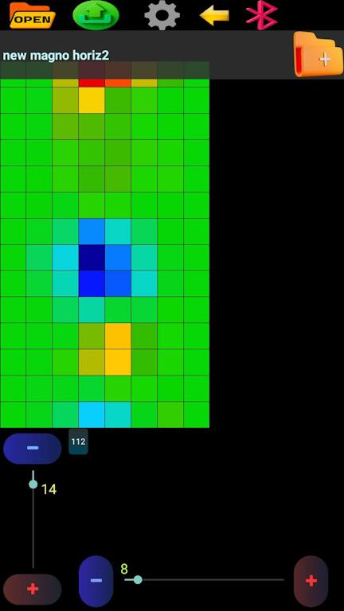
2. Scan Screen Operations and Data Recording
Use the phone back button or the top navigation arrow to enter the scan screen. The menu provides New Scan, 2D/3D mode selection, and scanning direction options for flexible data collection.
The navigation controls allow movement through grid cells without recording. Press Record to save measurements. Long-press the Record button to enable automatic timed recording – perfect for systematic surveys.
After completing a scan, choose Direct Save for original data or Enhanced Save for improved visualization processing.
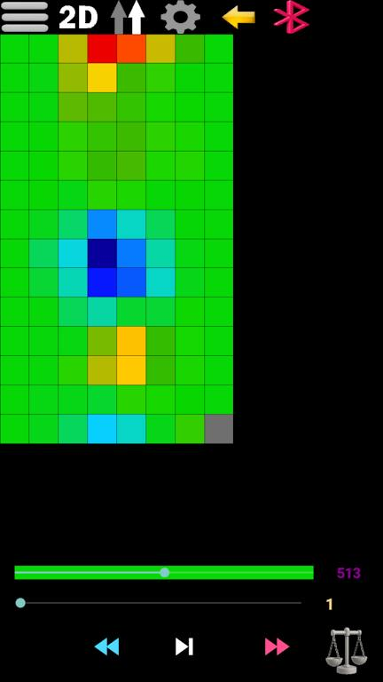
3. Data Management – Save, Restore, and Edit Cells
Manual Save & Rollback
You can save your scan at any point during data collection using the Save option from the menu. If you make a mistake, simply cancel the save – the app will roll back to the last saved state.
Using the navigation buttons (back/forward), you can jump to any cell and continue scanning from that point.
Editing Individual Cells
You can edit any single cell manually, but only in External mode or when Bluetooth is disconnected.
- Adjust the slider at the bottom to set a custom value between 0 and 1024.
- Press the Record (▶) button to write that value into the currently selected cell.
4. Scan Direction and Navigation
The scan always starts from the bottom‑right corner and moves vertically (bottom to top).
Two scan modes are available:
- One‑Way (Go/Go): Scan bottom→top, then return to the bottom and start the next column.
- Zigzag (Go/Return): Scan bottom→top, then continue directly top→bottom in the next column. This is faster and more efficient for large grids.
Use the direction toggle in the scan menu to switch between these modes.
5. 2D Visualization Features
The 2D menu provides different visualization tools including:
- Smoothing – reduce noise in your data
- 43 color palettes – customize visual representation
- Amplification modes – enhance subtle variations
- Noise reduction – improve signal clarity
- Grid display – precise spatial reference
- Zoom functions – detailed analysis of specific areas
- RGB channel removal – cancel any color channel
- Color shift – rotate the color spectrum
- Crop – focus on specific regions
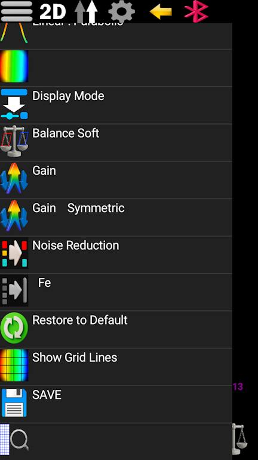
6. 3D View and Advanced Visualization Settings
The 3D viewer allows:
- Rotation – examine data from any angle
- Movement – navigate through the 3D space
- Depth adjustment – focus on specific layers
- Lighting control – enhance visual clarity
- Custom textures – apply your own images as surface textures
- 43 color palettes plus texture options
- RGB channel removal – cancel any color channel
- Amplify height – exaggerate vertical differences
- Amplify colors – boost overall vibrancy
- Color shift – rotate the color spectrum
- Crop – focus on specific regions
Long-press the rotation control to enable automatic rotation for dynamic presentations. The viewer supports different presentation modes for easier interpretation of collected data.
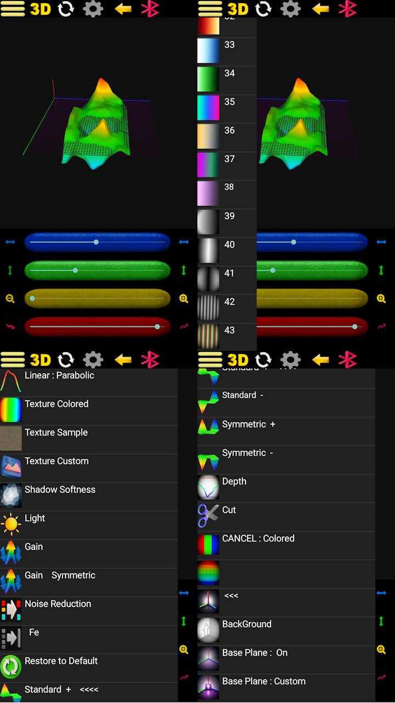
7. Export and Data Transmission Formats
AnyScan209 supports data export and real-time streaming in multiple formats for maximum compatibility with analysis software:
- OBJ: Best for advanced 3D modeling and rendering software. Available in low-resolution and high-resolution output.
- STL: Ideal for 3D printing applications to generate physical topographic relief maps. Available in low-resolution and high-resolution output.
- CSV: Standard spreadsheet formatting used for tabular data analysis in Microsoft Excel, MATLAB, or Voxler. Available in low-resolution and high-resolution output.
- PLY: A rich 3D format that stores both geometry and color attributes (per-vertex color), making it the best choice when you want to preserve the color palette of your scan. Available in low-resolution and high-resolution output.
- Real-Time Bluetooth Serial Stream: Allows a 1:1 raw data broadcast directly to compatible receivers, such as customized Microsoft Office macros, analytical HTML scripts, or third-party mapping applications with built-in serial communication capabilities.
8. General Settings and Sensor Configuration
The settings menu provides:
- Sensor selection – internal or external (Bluetooth)
- Language selection – English or Persian
- Compass options – for orientation assistance
- Detector sound – audio feedback for measurements
- Vibration feedback – tactile confirmation
- Screen control – power management during long scans
- Visualization assistance tools – for improved data interpretation
The app supports internal smartphone sensors and external Bluetooth sensor modules like HC-05 and other SPP-compatible devices.
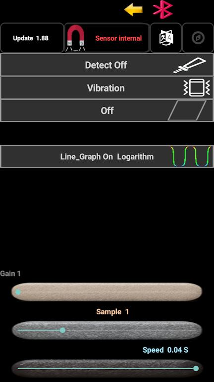
9. Pro Tip: Enhancing Your Scanning Setup
For stable scanning movement, a smartphone holder or selfie stick can be used. A Bluetooth remote controller can also help operate the Record function without touching the phone – ideal for maintaining consistent measurements.
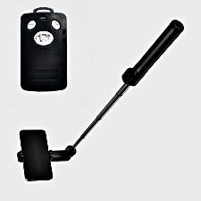
10. External Sensor Mode for Advanced Scanning
In External Sensor mode, activate the external option from the Settings page. Using a serial Bluetooth module such as HC-05 or another SPP-compatible device, a microcontroller can send measurement values to AnyScan209.
The communication range is based on values from 0 to 1024. In magnetometer mode, the center balance value is approximately 512. Other sensor types can use the full 0 to 1024 range for various measurements.
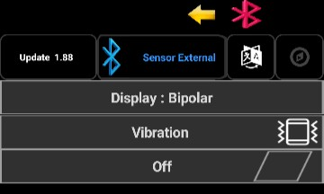
11. Internal Sensors – Four Powerful Modes in One App
AnyScan209 is not just a magnetometer. It is a universal 2D/3D visualizer that can read from four different internal smartphone sensors. To choose the sensor you want, simply long-press the sensor icon on the Settings page — a sensor selection list will appear, and you can switch between any of the following four sensors at any time.
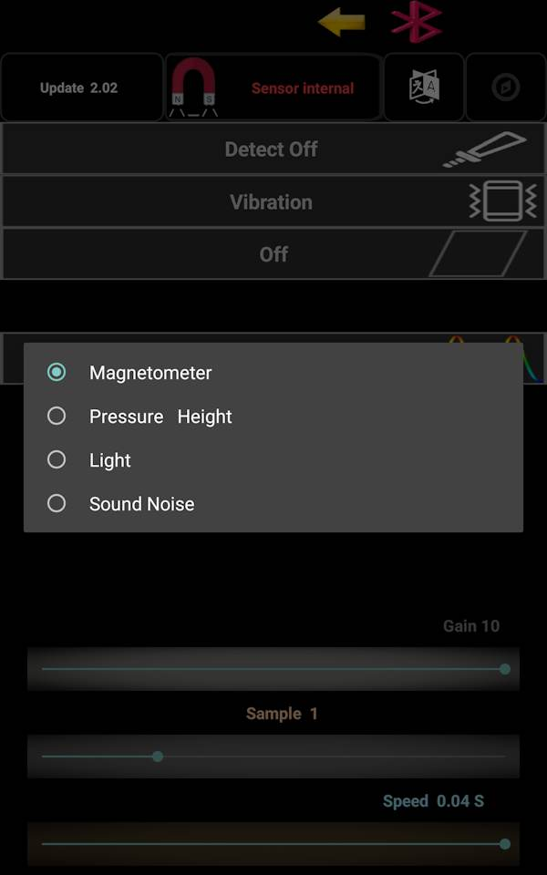
- Open the Settings page.
- Long-press the sensor icon at the top of the settings panel.
- A list of all available internal sensors appears.
- Tap any sensor to activate it.
🧲 1. Magnetometer – For Geophysics, Cavity Detection & Magnetic Field Mapping
The magnetometer (compass sensor) is the most powerful mode in AnyScan209 and is designed for serious field work:
- Geophysical surveys – mapping subsurface anomalies
- Cavity and void detection – locating underground hollow spaces, tunnels, or buried structures
- Geological exploration – studying soil and rock magnetic signatures
- Magnetic field visualization – detecting and mapping static and alternating magnetic fields
- Metal and wire detection – finding ferromagnetic objects, rebar, pipes, and conduits behind walls
- Educational experiments – demonstrating electromagnetic principles in real time
This mode is ideal for researchers, geophysicists, treasure hunters, and anyone working with magnetic field analysis.
⛰️ 2. Barometer / Altimeter – For Elevation Mapping & Surface Topography
The barometric pressure sensor (available on many modern smartphones) measures atmospheric pressure and converts it into relative altitude. In AnyScan209 this sensor becomes a powerful elevation mapping tool:
- Altitude measurement – tracking elevation changes
- Surface topography mapping – building 2D and 3D maps of terrain height differences
- Floor-level surveys – detecting small height variations across an area
- Outdoor field surveys – mapping hills, slopes, and elevation contours
💡 3. Light Sensor – For Illumination Mapping & Environmental Light Analysis
The ambient light sensor measures the intensity of light around the phone. In AnyScan209, this sensor becomes a professional illumination mapping tool:
- Light intensity surveying – measuring and mapping brightness across a surface or space
- Lighting installation analysis – visualizing how light is distributed in a room, hall, or outdoor space
- Environmental light visualization – analyzing natural and artificial light patterns
- Greenhouse & agricultural mapping – mapping light distribution for optimal plant growth
- Photography & studio lighting – checking evenness of illumination
- Architectural lighting design – verifying light coverage and uniformity
Perfect for lighting engineers, greenhouse operators, photographers, and anyone who needs to see how light is distributed in a space.
🔊 4. Sound / Noise Meter – For Acoustic Mapping & Industrial Noise Analysis
The phone's microphone is used as a professional sound level meter (SPL meter). In AnyScan209 this becomes a powerful acoustic mapping tool:
- Noise mapping – measuring and visualizing sound levels across an area
- Industrial noise analysis – mapping noise pollution in factories, workshops, and construction sites
- Acoustic environment surveying – analyzing sound distribution in rooms, halls, and open spaces
- Soundproofing verification – checking effectiveness of acoustic insulation
- Machine diagnostics – locating abnormal noise sources in equipment
- Environmental acoustics – studying urban, rural, and indoor noise patterns
Ideal for acoustic engineers, safety inspectors, industrial technicians, and researchers studying noise pollution.
With AnyScan209, the same app can be used as a magnetometer, altimeter, light meter, or sound level meter — just switch the sensor and start scanning. All four sensors use the same 0–1024 visualization range, the same 2D/3D viewers, and the same OBJ / STL / CSV / PLY export. This makes AnyScan209 a truly universal measurement platform for professionals and hobbyists alike.
12. Gain and Balance – Understanding the 0–1024 Range
Internal Sensor (Magnetometer)
Smartphone magnetometers are typically 16‑bit sensors with a raw range of 0 to 65,535. AnyScan209 applies a Gain factor (adjustable from 10 down to 1) to map this raw data into the 0–1024 visualization range.
- Default Gain = 10: The app automatically balances the sensor using the Balancer (⚖️) icon, setting the neutral point to 512. This provides maximum sensitivity for magnetic field detection.
- Lower Gain (9 to 1): Reduces sensitivity but covers a wider measurement range. At Gain = 1, every 64 raw sensor units equals 1 unit in the 0–1024 range.
External Sensor (Bluetooth)
In External mode, the user is responsible for pre‑scaling their sensor data in hardware or firmware before sending it via Bluetooth. The app expects values in the 0–1024 range and applies no additional gain or scaling internally.
Serial.println().
13. Schematic Diagram – External Sensor Connection
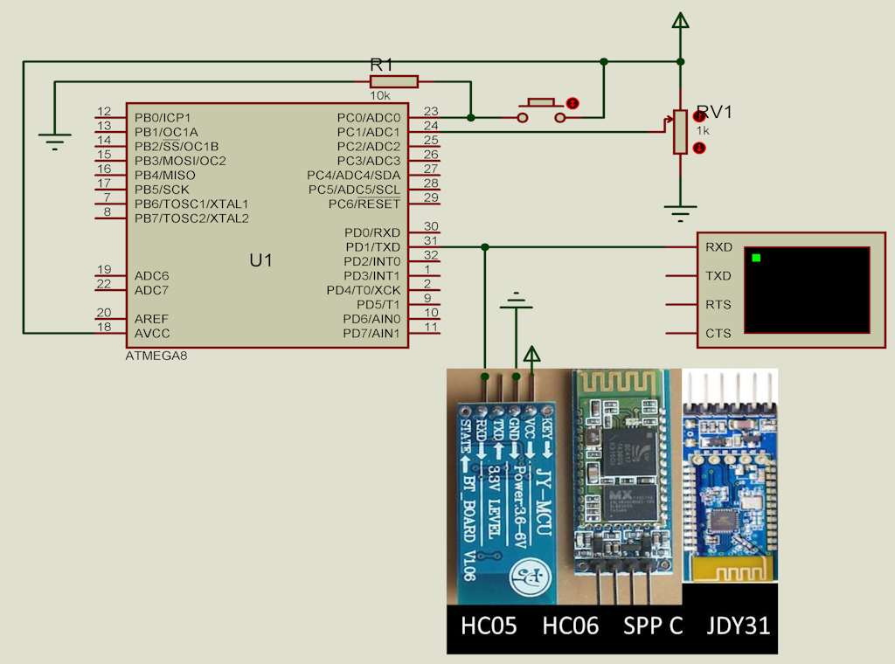
14. Microcontroller Integration: BASCOM to Arduino
Original BASCOM Code
$regfile = "m8adef.dat"
$crystal = 8000000
Config Adc = Single , Prescaler = Auto , Reference = Avcc
Enable Interrupts
Config Portc.0 = Input
Config Portc.2 = Output
Dim Insw As Bit
Dim Vale As Word
Do
If Pinc.0 = 0 And Insw = 1 Then
Insw = 0
Portc.2 = 0
End If
If Pinc.0 = 1 And Insw = 0 Then
Portc.2 = 1
Insw = 1
Vale = Getadc(1)
Print Vale
End If
Loop
Converted Arduino C++ Code
// BASCOM PortC.0 to Arduino input pin const int switchPin = A1; const int outputPin = 2; bool lastSwitchState = false; int analogValue = 0; void setup() { Serial.begin(9600); pinMode(outputPin, OUTPUT); pinMode(switchPin, INPUT); digitalWrite(outputPin, LOW); } void loop() { bool currentSwitchState = digitalRead(switchPin); if (currentSwitchState == LOW && lastSwitchState == HIGH) { lastSwitchState = LOW; digitalWrite(outputPin, LOW); } if (currentSwitchState == HIGH && lastSwitchState == LOW) { digitalWrite(outputPin, HIGH); lastSwitchState = HIGH; analogValue = analogRead(A1); Serial.println(analogValue); } }
Alternative Version with Pull-up Enabled
// Arduino code with INPUT_PULLUP enabled const int switchPin = A1; const int outputPin = 2; bool lastSwitchState = false; int analogValue = 0; void setup() { Serial.begin(9600); pinMode(outputPin, OUTPUT); pinMode(switchPin, INPUT_PULLUP); digitalWrite(outputPin, LOW); } void loop() { bool currentSwitchState = digitalRead(switchPin); if (currentSwitchState == LOW && lastSwitchState == HIGH) { lastSwitchState = LOW; digitalWrite(outputPin, LOW); } if (currentSwitchState == HIGH && lastSwitchState == LOW) { digitalWrite(outputPin, HIGH); lastSwitchState = HIGH; analogValue = analogRead(A1); Serial.println(analogValue); } }
Proteus File Download
15. Magnetometer Sensor Guide for AnyScan209
This table provides information about smartphone magnetometer sensors and their general characteristics for use with AnyScan209.
| Manufacturer | Sensor Model | Sampling Rate | Resolution | Noise Level | Example Devices |
|---|---|---|---|---|---|
| MEMSIC | MMC5616WA | 1000 Hz | 0.00625 µT/LSB | Very Low | Check device specifications |
| AKM | AK09973D | Up to 2000 Hz | High sensitivity | Medium | Selected Samsung, Xiaomi and Sony devices |
| Yamaha | YAS537 | 200 Hz | 0.15 µT/LSB | Very Low | Samsung Galaxy S6, S7, Note series |
| Yamaha | YAS539 | ~200 Hz | 0.12 µT/LSB | Very Low | Samsung Galaxy A series devices |
| Alps Alpine | HSCDTD015A | 200 Hz | 0.075 µT/LSB | Low | Used in some modern smartphones |
| STMicroelectronics | LIS3MDL | 1000 Hz | Medium | Medium | Motorola, Nokia and LG devices |
⚠️ Why does my flagship phone have a weaker or slower magnetometer sensor?
Most flagship smartphones use high-quality 16-bit magnetometer sensors with excellent precision and fast sampling rates. However, you may notice that a mid-range or budget device (e.g., Samsung Galaxy A-series) performs more sensitively or responds faster in certain conditions.
The reason is not the sensor chip itself, but its physical installation environment:
- Wireless charging coils – Many flagship phones include built-in magnets or metal rings for wireless charging alignment. These permanent magnets create a constant magnetic offset that can interfere with the magnetometer.
- Metal bodies and frames – Premium devices often use metallic back covers or chassis. Ferromagnetic materials can distort the surrounding magnetic field and affect sensor readings.
- Sensor placement – In some budget-friendly phones (like Samsung A-series), the magnetometer is mounted farther away from magnetic interference sources and housed in a plastic body, resulting in a cleaner, more responsive signal.
Bottom line: The sensor itself is rarely the problem. Installation conditions, nearby magnets (from wireless charging), and metallic components play a much larger role in real-world performance. Always test your device in a magnetically clean environment for the best results.
Tip: To view information about your phone's magnetometer sensor, open Settings, go to the Update section, and select Sensor internal : help.
16. Use Your Smartphone as a Magnetic Field Detector
How to Use the Gauge and Graph Features
In AnyScan209, switch to Internal Sensor mode. Press and hold the sensor option to open advanced settings, then enable the Graph and Gauge features. Select the Bipolar Gauge display mode for real-time magnetic field visualization.
Return to the scan screen and bring your smartphone close to a device that produces a magnetic field, such as:
- Current-carrying wires
- Transformers
- Relays
- Solenoids
The gauge will respond to changes in the surrounding magnetic field. Alternating magnetic fields from AC electrical systems can cause the indicator to move in both directions, allowing visualization of magnetic field changes. DC magnetic fields may cause the indicator to move in one direction depending on the field orientation.
Educational and Practical Applications
- Educational experiments – demonstrate magnetic field principles
- Magnetic field visualization – observe field patterns in real-time
- Locating areas with stronger magnetic interference – identify sources of electromagnetic noise
Note: To locate wiring paths behind the wall, you need a good excitation field. It is recommended to have a high-power load—such as an electric heater or an electric kettle—at the end of the circuit so that a suitable inductive field is generated around the wires.
17. Practical Tips for Detecting Wires and Conduits Behind Walls
The method described above works best for cables or wires inside PVC or non-metallic conduits at shallow depths (a few centimeters). Since the magnetic field from AC current can penetrate plastic pipes, your phone's magnetometer can detect the alternating field and help trace the wiring path.
For metal conduits (steel or galvanized):
You do not need any current flowing through the wires inside the pipe. Even with no load at the end and no current passing through, the metal conduit itself creates a detectable magnetic anomaly. Because steel and galvanized pipes are ferromagnetic materials, they disturb the magnetic field around them. When you move your phone over a metal conduit, the magnetometer needle will deflect to one side (a static offset) simply due to the pipe's own magnetic signature.
- PVC / non‑metallic pipes: Require a high‑power load (heater, kettle) to generate a strong AC magnetic field.
- Metal (steel/galvanized) pipes: Detectable even with no current – the pipe itself creates a magnetic disturbance.
- Detection depth is limited to a few centimeters for most smartphone magnetometers.
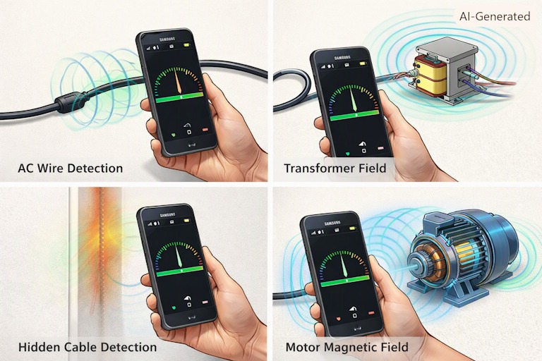
Please note that Android devices use different magnetometer sensors. The performance of magnetic field measurements depends on the quality and specifications of the sensor installed in each phone.
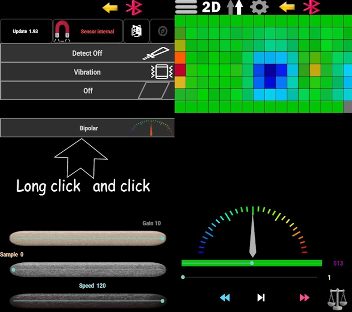
18. Direct & Alternating Current Measurement with AnyScan209
In the scan page, when you open the bottom menu, you will see four options:
- DC Ammeter — Direct Current measurement
- DC Calibration — Direct Current calibration
- AC Ammeter — Alternating Current measurement
- AC Calibration — Alternating Current calibration
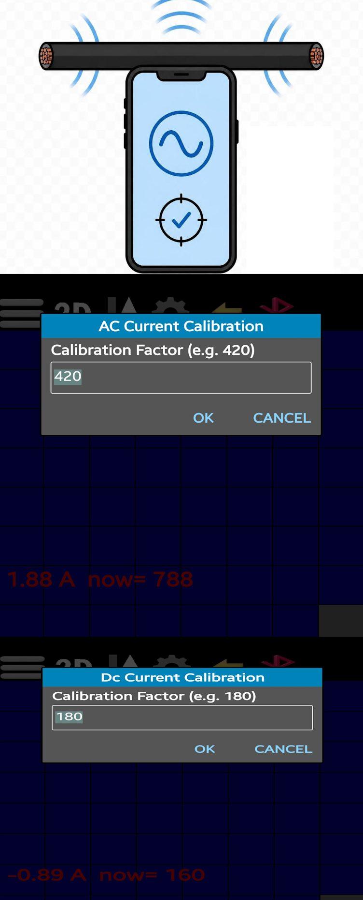
How It Works
If the current-carrying wire is placed in a proper and consistent position, you can measure the current through the magnetic field around it — exactly what current transformers (CTs) do. However, note that the position of the current-carrying wire relative to the sensor is very important, because its stability and correct calibration determine the accuracy of the measurement. Conversely, unfavorable conditions lead to inaccurate measurements.
DC Current Measurement
Before starting, press the Balancer (⚖️) icon so that the measurement field is set to zero before measuring. DC current measurement is somewhat more difficult because factors such as the presence of ferromagnetic metals nearby adversely affect accuracy.
If the initial adjustment does not give correct current, simply look at the now= value on the right side of the Calibration section and adjust it as follows:
- Place the phone sensor on or in front of the wire.
- Pass a known current (e.g., 1 ampere) through the wire using a laboratory power supply or any other method.
- Note the number shown next to now=.
- Enter that number in the Calibration input and confirm.
- If you don't have access to 1 A, any known current works. For example, if the reading now shows 800 for 4 A, then for 1 A the calibration value is 200.
For DC, it doesn't matter if the wire is reversed and the current reading is negative — just enter the absolute value (without sign) into the calibration field.
AC Current Measurement
AC current calibration follows the same procedure as DC. However, AC measurement is highly dependent on the performance and speed of the magnetic sensor, and you may not get satisfactory results on some phone models.
Important Notes
- These measurements only work in Internal Sensor (Magnetometer) mode.
- AC measurement depends heavily on the speed and quality of the magnetometer — results may vary between phone models.
- For best results, keep the wire in a fixed, consistent position relative to the sensor.
Never attempt to measure current in high-voltage or high-current locations such as copper busbars. Doing so puts you at serious risk of electric shock, especially if your phone has a metal body. Always follow electrical safety procedures and never compromise your safety for a measurement.
19. Frequently Asked Questions About AnyScan209
Is AnyScan209 completely free to download and use?
Yes, AnyScan209 is 100% free to download and use. There are no hidden charges, in-app purchases, or premium versions. The app provides full functionality without any cost.
Does AnyScan209 work with external sensors?
Yes! AnyScan209 supports external Bluetooth sensors such as HC-05 modules and other SPP-compatible devices. This makes it ideal for custom measurements using specialized hardware.
What data formats can I export from AnyScan209?
AnyScan209 supports export in four formats: OBJ for 3D models, STL for 3D printing applications, CSV for data analysis in spreadsheets and scientific software, and PLY for color-preserving 3D data. All 3D export formats are available in low-resolution and high-resolution variants, and PLY additionally stores per-vertex color attributes.
Can I use AnyScan209 for more than just magnetic field scanning?
Absolutely! AnyScan209 is a universal 2D/3D visualizer with four internal sensors (magnetometer, barometer, light, sound) and support for any external 0–1024 sensor data. Whether you're measuring temperature, pressure, altitude, light, acoustic signals, or custom sensor data, just send values between 0 and 1024 and the app creates stunning visualizations.
Does AnyScan209 contain ads or collect my data?
No. AnyScan209 is completely free, contains no advertisements, and never sends any data to external servers. All scans, settings, and data stay locally on your device. Your privacy is fully respected.
Which Android devices are compatible with AnyScan209?
AnyScan209 works on any Android device that has a built-in magnetometer sensor. Most modern smartphones include this sensor. For best results, use devices with high-quality sensors like those listed in the sensor guide above.
Can I use AnyScan209 for professional geophysical surveys?
Absolutely! AnyScan209 is designed for both educational and professional use. Its 2D/3D visualization, data export, and external sensor support make it suitable for various fields.
What is the Gain feature and how does it work?
Gain adjusts the sensitivity of the internal 16-bit magnetometer (0–65535 raw). Default Gain=10 maps the raw data to the 0–1024 visualization range with neutral point at 512. Lower Gain (9 to 1) reduces sensitivity but covers a wider range. In External mode, you must pre-scale your sensor data before sending via Bluetooth.
Can I find hidden electrical wires behind walls using AnyScan209?
Yes. By switching to Internal Sensor mode and using the Bipolar Gauge visualization, you can trace hidden live electrical wires (under high-power load) or metal conduits behind walls via the phone's built-in magnetometer. Detection depth is limited to a few centimeters.
Can AnyScan209 measure DC and AC current?
Yes, in Internal Sensor (Magnetometer) mode only. The Scan page bottom menu offers DC Ammeter, DC Calibration, AC Ammeter and AC Calibration. Calibrate with a known current first. AC accuracy depends on the speed and quality of your phone's magnetometer. Never measure high-voltage or high-current locations such as copper busbars.
I have ideas or feature requests for improving the app. How can I submit them?
Thank you for your interest and your ideas! We truly welcome user suggestions, but there is an important point we need to share with you:
Our main concern: Some ideas may divert the application from its original path and turn it from a scientific tool into a fantasy or dream tool. This could affect the expectations and understanding of other users and undermine the scientific credibility of the tool.
Suggested solution:
- Report your ideas: Please report your ideas and suggestions in the community forum so we can discuss them together and choose the best path forward.
- Use SoifGo: Don't worry — every idea is executable! Simply visit the SoifGo web app builder at:
https://soifgo.github.io/index.html
SoifGo is a web-based app builder that can fulfill any request you have. No programming knowledge required! - How it works:
- Request your desired feature from AI in the form of HTML code.
- Paste the code into SoifGo or reload the file.
- You can take the sample AnyScan209 files from its folder and run 3D/2D analysis and anything else you need in SoifGo.
Important note: Remember that HTML has one of the widest libraries available among all programs, giving you the greatest freedom to customize and experiment.
In summary: Your ideas are still respected and executable, but let's not make the main app heavier or divert it further. Instead, use SoifGo as your personal laboratory to implement your creative ideas. This way, both our scientific app stays intact and you have complete freedom to create whatever you envision.
Tutorial video: As shown in the tutorial video below, you can open a 3D View inside SoifGo. This 3D View is saved in the SoifGo HTML folder, so don't worry about losing it. You can even edit it yourself: describe your idea to an AI assistant and run the result in this web app. You can do almost anything you like.